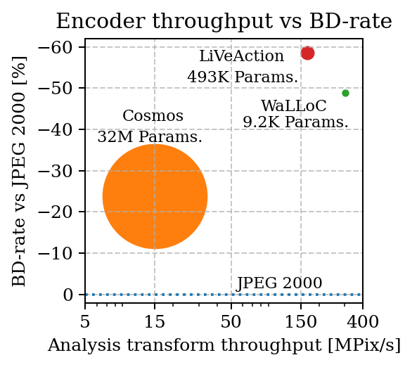

model |
analysis (cpu) |
ent. code |
ent. decode |
synthesis (cpu) |
enc (cpu) |
dec (cpu) |
analysis (gpu) |
synthesis (gpu) |
gpu enc |
gpu dec |
Enc P |
Dec P |
|---|---|---|---|---|---|---|---|---|---|---|---|---|
f16c48 |
10.540 |
35.941 |
762.06 |
0.73783 |
8.1498 |
0.73712 |
166.79 |
205.63 |
34.647 |
161.59 |
493.00 K |
76.075 M |
f16c48 v2 |
10.435 |
318.18 |
421.98 |
0.75283 |
10.050 |
0.75140 |
169.34 |
200.78 |
110.52 |
136.05 |
493.00 K |
76.075 M |
Cosmos DI16 |
14.877 |
11.288 |
14.833 |
11.267 |
34.621 M |
49.103 M |
||||||
WaLLoC f8c48 |
21.773 |
11.061 |
1876.9 |
0.30510 |
7.3349 |
0.30510 |
302.35 |
226.31 |
10.371 |
191.42 |
9264.0 |
57.132 M |
WaLLoC f16c48 |
20.617 |
1.6716 |
284.18 |
390.37 |
import matplotlib.pyplot as plt, numpy as np
encoders = ["", "Cosmos", "WaLLoC", "LiVeAction"]
throughput = [50, 14.877, 302.35, 166.79]
bd_ssim_rate = np.array([0, -29.9439, -57.5230, -70.0758])
bd_psnr_rate = np.array([0, +49.6106, -27.6079, -36.3974])
bd_dists_rate = np.array([0, -90.8796, -61.7135, -69.0857])
bd_rate = (1/3)*(bd_ssim_rate + bd_psnr_rate + bd_dists_rate)
sizes = np.array([0, 34.621, 0.009264, 0.493])
sizes[2] = 0.1 # too small to see
sizes = 100*sizes
plt.rcParams["font.family"] = "serif"
plt.figure(figsize=(3.2, 3), dpi=180)
for i in range(4):
plt.scatter(throughput[i], bd_rate[i], s=sizes[i])
plt.xscale('log')
for i, label in enumerate(encoders):
if i ==1:
plt.text(9, -42, label, fontsize=9)
plt.text(6, -37, '32M Params.', fontsize=9)
elif i ==2:
plt.text(80, -44.5, label, fontsize=9)
plt.text(60, -40.5, '9.2K Params.', fontsize=9)
elif i ==3:
plt.text(30, -56.5, label, fontsize=9)
plt.text(25, -51.5, '493K Params.', fontsize=9)
plt.plot([5,400],[0,0],linestyle=':')
plt.text(55,-1.5, 'JPEG 2000', fontsize=9)
plt.xlabel("Analysis transform throughput [MPix/s]")
plt.ylabel("BD-rate vs JPEG 2000 [%]")
plt.title("Encoder throughput vs BD-rate")
plt.xlim([5,400])
plt.ylim([-62,2])
plt.xticks([5,15,50,150,400],labels = ['5','15','50','150','400']);
plt.grid(True, linestyle='--', alpha=0.7)
plt.tight_layout()
plt.gca().invert_yaxis()
plt.savefig('tp_vs_bd.svg')

bd_rate
array([ 0. , -23.73763333, -48.94813333, -58.51963333])